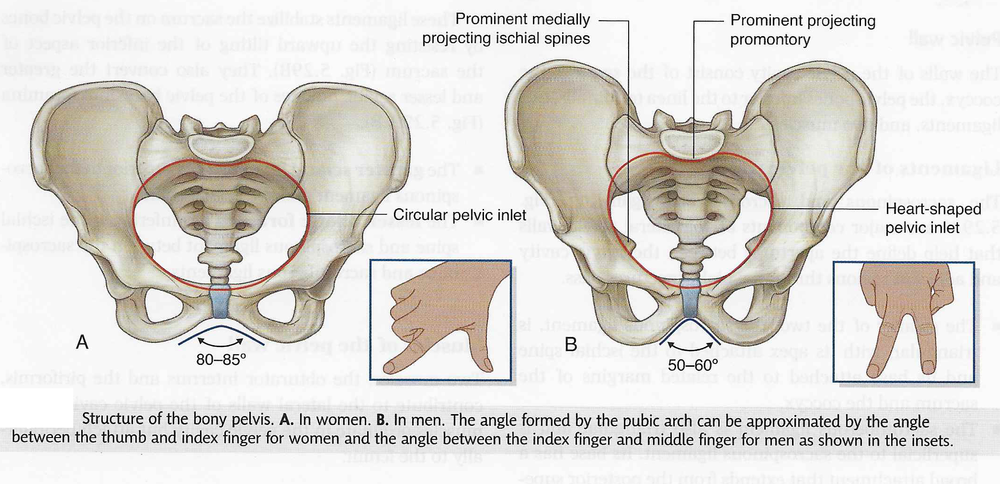
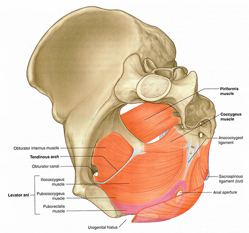

END 1 Lab 2: Male Pelvis and Genitalia: Module 1
OBJECTIVES:END1.2.1 Identify the arterial and venous supply of the male genitalia. END1.2.2 Identify the extent of the peritoneal cavity, its folds, its reflections, and its pouches and spaces in the male pelvis and their relationship to the pelvic contents. END1.2.3 Distinguish between the ligaments which are formed by folds of peritoneum, ligaments formed by the gubernaculums, and ligaments which are formed by condensations of visceral pelvic fascia in terms of their function and location. END1.2.4 Identify the pelvic viscera, their normal positions and anatomical relationships. END1.2.5 Identify the muscular and ligamentous components of the inguinal ligament and inguinal canal in the male. Demonstrate the surface projections of the inguinal rings and inguinal canal. Discuss direct and indirect / hernias. END1.2.6 Trace the course of the spermatic cords as they descend through the inguinal canal to the scrotum. END1.2.7 Discuss the effects of sympathetic and parasympathetic innervation of the male genitalia. |
READINGS:Gray's Anatomy for Students (Fourth Edition): Pages: 460-468, 479. See Green Highlighted sections for clinical correlation. |
Male Pelvis and Genitalia: Page 1 of 8
| Begin with the male skeleton. |
What are the differences between an male and female pelvis? |
|
|
Male: (1)Heavier, (2) More prominent landmarks, (3) Infrapubic angle less than 60 degrees. Female: (1) Wider and shallower, (2) Larger pelvic inlet/outlet, (3) Infrapubic angle greater than 90 degrees.  |
|
|  |
| Pelvic floor Tap on image to enlarge |
| Add the lateral wall muscles and ligaments. | |
| Using the Highlight tool, identify the following muscles:
|
Note that the sacrospinous ligament was not identified in this cadaver.